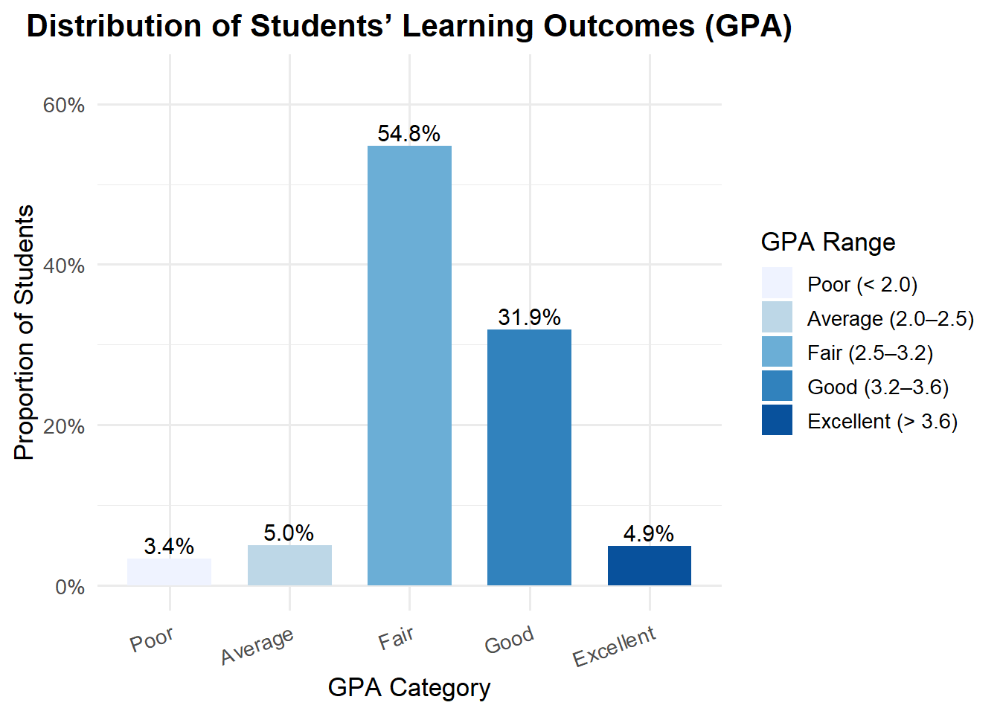
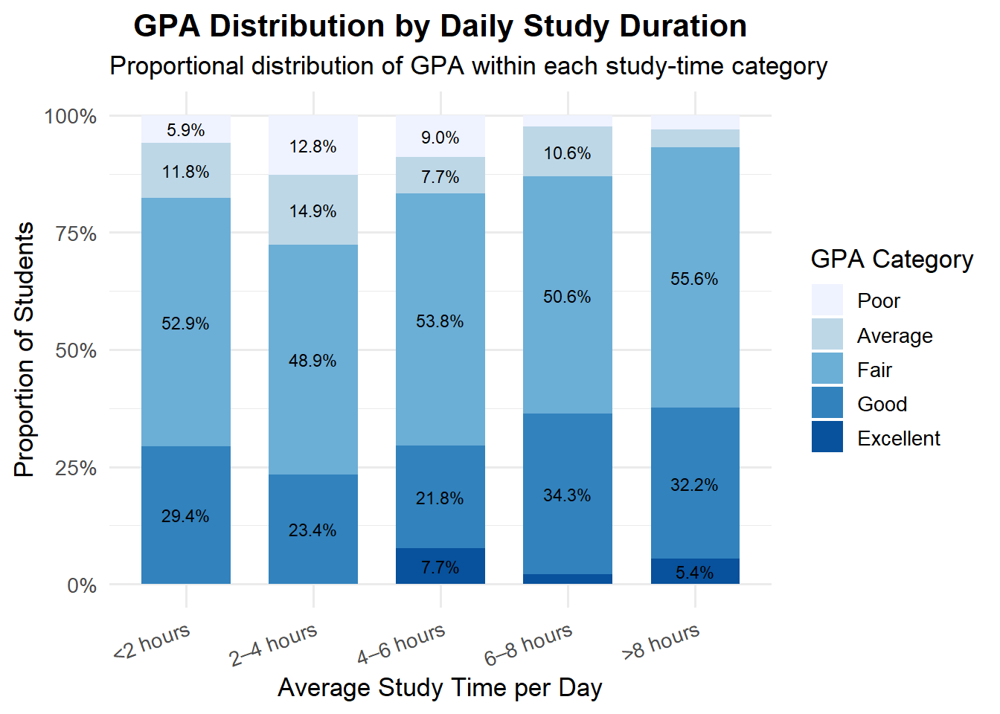
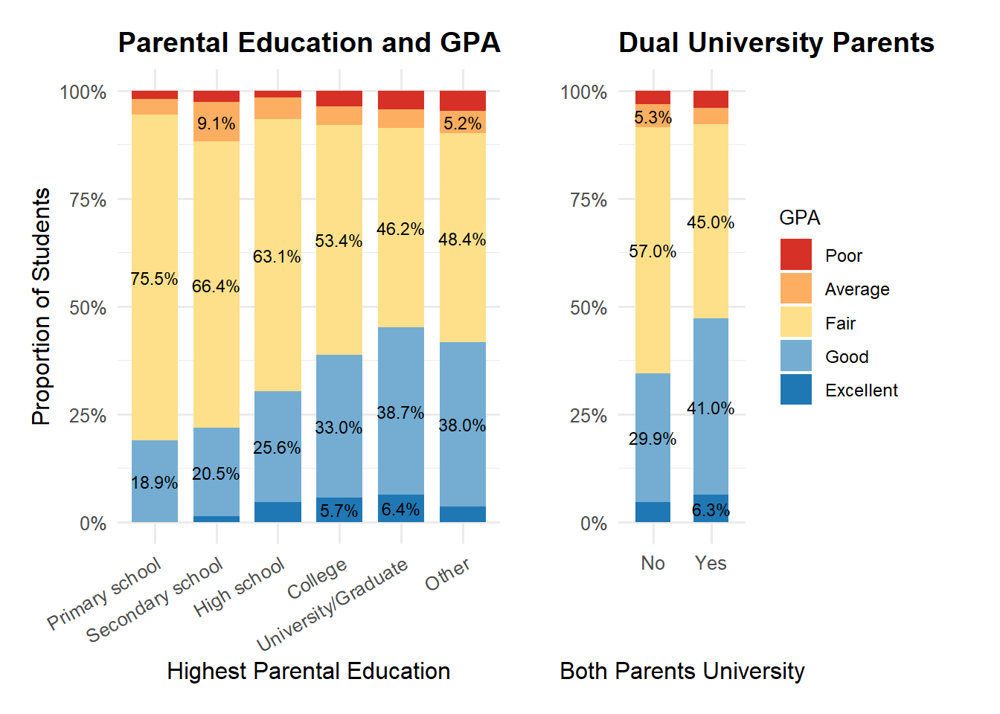
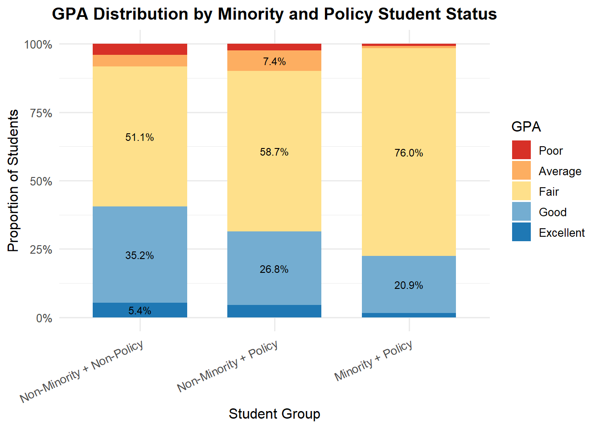
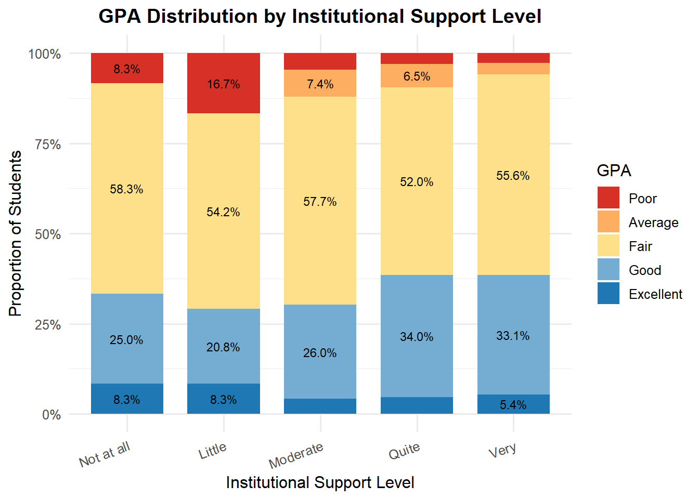
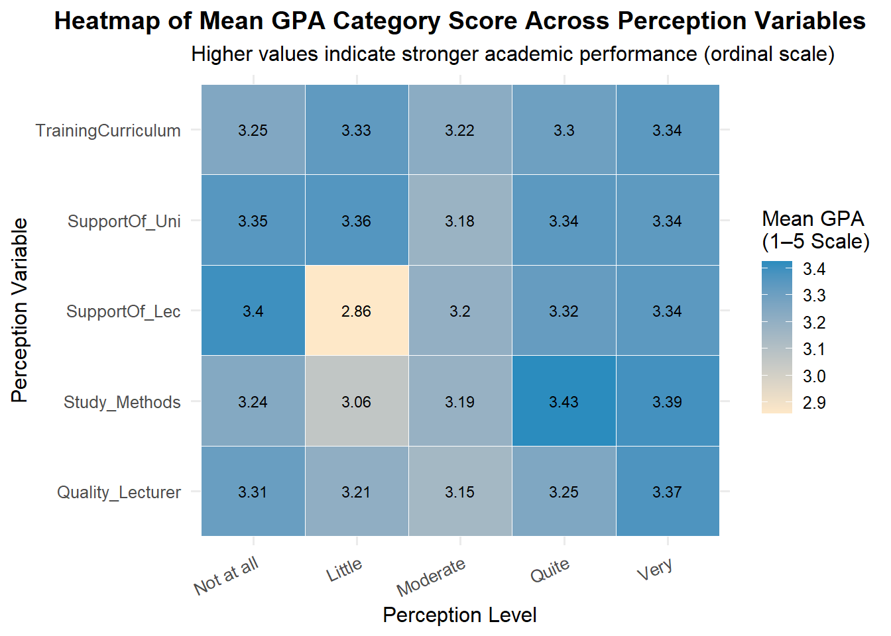
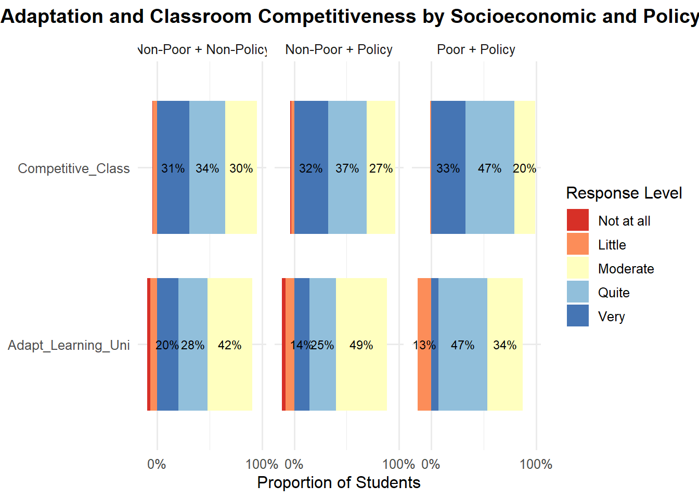
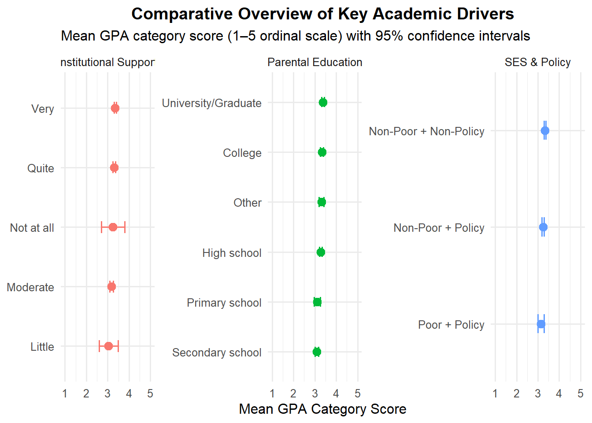

pacman::p_load(
tidyverse,
ggthemes,
scales,
patchwork,
readxl
)Take Home Exercise 1
Creating Data Visualisation Beyond Default: Exploring Factors Affecting Students’ Learning Outcomes
1 Introduction
Education plays a critical role in shaping human capital and long-term socio-economic development. Understanding the factors that influence students’ learning outcomes is therefore essential for educators and institutions seeking to improve academic performance and learning experiences. Survey data provides an opportunity to examine how demographic characteristics, study behaviours, and learning environments relate to students’ academic outcomes.
This take-home exercise applies visually driven exploratory data analysis techniques to examine students’ learning outcomes and their relationships with selected individual, behavioural, and institutional factors. Using carefully designed data visualisations, the analysis aims to reveal meaningful patterns while ensuring that insights are presented in a clear, truthful, and reproducible manner.
1.1 Background
Despite increasing access to education, students’ academic performance continues to vary due to differences in personal background, study habits, and the level of support provided by educational institutions. Factors such as gender, family background, time spent on self-study, internet usage, and perceived institutional support may influence learning outcomes in complex ways.
Rather than relying solely on numerical summaries, data visualisation enables these relationships to be explored more intuitively by revealing distributions, contrasts, and trends within the data. Well-designed visualisations can help identify patterns that may otherwise remain hidden, providing a foundation for deeper investigation into the drivers of academic performance.
1.2 Objective and Analytical Questions
The objective of this take-home exercise is to apply appropriate exploratory data analysis techniques and visually driven methods to examine students’ learning outcomes using survey data. Through the use of carefully designed data visualisations, this exercise aims to uncover general patterns, distributions, and potential relationships within the data.
In particular, the analysis focuses on exploring the distribution of students’ learning outcomes and examining how these outcomes vary across selected student characteristics and contextual factors. The visualisations are used to provide an initial understanding of how learning outcomes may differ across groups and conditions, without making causal claims.
The insights derived from this exploratory analysis serve as a starting point for identifying areas that may warrant deeper investigation in future studies related to student academic performance.
2 Getting Started
2.1 Setting the Analytical Tools
The data preparation, analysis, and visualisation tasks in this take-home exercise are performed using R and a set of packages from the tidyverse ecosystem. These packages support reproducible data wrangling workflows and the creation of expressive statistical graphics based on the Grammar of Graphics.
In addition to ggplot2, several ggplot2 extension packages are used to enhance the clarity and expressiveness of the visualisations beyond default settings.
The R packages used in this take-home exercise are:
tidyversefor data import, tidying, wrangling, and visualisationggthemesfor applying consistent and visually appealing plot themesscalesfor formatting axes and labelspatchworkfor arranging multiple plots where necessary
The code chunk below uses the p_load() function from the pacman package to check whether the required packages are installed. If the packages are not available, they are installed before being loaded into the R environment.
2.2 Data Source
The dataset used in this take-home exercise is a student survey dataset that captures information related to students’ academic performance, personal background, study behaviours, and perceptions of the learning environment.
The dataset consists of 2,170 observations and 22 variables, with each observation representing an individual student’s survey response. The variables include a mix of demographic attributes, indicators of family background, study-related behaviours, and self-reported perceptions of institutional and learning support.
For the purposes of this exploratory analysis, the dataset is used to examine general patterns and relationships between students’ learning outcomes and selected contextual factors. No attempt is made to draw causal conclusions from the data.
3 Data Wrangling
3.1 Importing data
The dataset used in this take-home exercise is provided in Microsoft Excel format and stored in the project’s data directory. The file is imported into the R environment using the read_excel() function from the readxl package and stored as a tibble data frame for subsequent analysis.
stu_data <- read_excel("data/Database.xlsx")3.2 Examining the Data Structure and Initial Checks
Before touching anything, we must:
- Check number of rows & columns
- Inspect variable types
- Check for missing values
- Check duplicates
3.2.1 Number of rows and columns
dim(stu_data)[1] 2170 223.2.2 Inspect variable types
glimpse(stu_data)Rows: 2,170
Columns: 22
$ Year <dbl> 5, 5, 5, 5, 5, 5, 5, 5, 5, 5, 5, 5, 5, 5, 5, 5, 5, …
$ Gender <dbl> 2, 1, 2, 2, 1, 2, 2, 2, 2, 2, 1, 2, 2, 2, 2, 2, 2, …
$ Policy_Stu <dbl> 2, 2, 2, 2, 1, 2, 2, 2, 2, 2, 2, 2, 2, 1, 2, 2, 2, …
$ Minority_Stu <dbl> 2, 2, 2, 2, 2, 2, 2, 2, 2, 2, 2, 2, 2, 2, 2, 2, 2, …
$ Poor_Stu <dbl> 2, 2, 2, 2, 2, 2, 2, 2, 2, 2, 2, 2, 2, 2, 2, 2, 2, …
$ Father_Edu <dbl> 4, 3, 4, 5, 2, 5, 6, 5, 5, 5, 3, 3, 3, 3, 3, 4, 5, …
$ Mother_Edu <dbl> 4, 3, 4, 4, 3, 5, 5, 4, 5, 4, 3, 3, 3, 4, 3, 4, 5, …
$ Father_Occupation <dbl> 2, 2, 1, 1, 3, 1, 1, 5, 1, 3, 3, 3, 3, 3, 2, 2, 4, …
$ Mother_Occupation <dbl> 3, 4, 2, 1, 3, 2, 4, 3, 1, 3, 3, 3, 3, 3, 2, 2, 4, …
$ Time_Friends <dbl> 2, 1, 1, 2, 1, 1, 2, 2, 1, 3, 2, 2, 2, 2, 2, 1, 3, …
$ Time_SocicalMedia <dbl> 2, 3, 2, 2, 2, 3, 2, 2, 2, 2, 2, 1, 2, 2, 2, 3, 4, …
$ Time_Studying <dbl> 5, 5, 5, 5, 1, 2, 5, 5, 5, 5, 5, 5, 5, 1, 5, 5, 5, …
$ GPA <dbl> 4, 3, 4, 4, 4, 4, 3, 5, 5, 3, 3, 4, 4, 3, 5, 4, 4, …
$ Adapt_Learning_Uni <dbl> 4, 3, 4, 4, 5, 4, 4, 4, 4, 3, 4, 4, 4, 5, 4, 4, 5, …
$ Study_Methods <dbl> 4, 3, 4, 4, 5, 4, 4, 4, 4, 4, 4, 4, 4, 5, 4, 3, 5, …
$ SupportOf_Uni <dbl> 3, 3, 4, 5, 5, 5, 5, 5, 4, 5, 4, 4, 4, 5, 4, 4, 5, …
$ SupportOf_Lec <dbl> 4, 4, 4, 5, 5, 4, 5, 4, 4, 5, 4, 4, 4, 5, 4, 4, 5, …
$ Facilitie_Uni <dbl> 4, 4, 3, 5, 5, 5, 5, 4, 4, 5, 4, 4, 4, 5, 4, 3, 5, …
$ Quality_Lecturer <dbl> 4, 3, 4, 5, 5, 5, 4, 5, 5, 5, 4, 4, 4, 5, 4, 4, 5, …
$ TrainingCurriculum <dbl> 4, 3, 4, 4, 5, 4, 5, 4, 4, 5, 4, 4, 4, 5, 4, 3, 5, …
$ Competitive_Class <dbl> 3, 3, 4, 4, 4, 3, 4, 3, 4, 4, 4, 4, 4, 5, 4, 4, 5, …
$ InfuenceF_Friends <dbl> 3, 4, 4, 4, 5, 3, 5, 4, 4, 4, 4, 4, 4, 5, 4, 5, 4, …3.2.3 Checking for Missing Values
Although survey datasets are often pre-cleaned, due diligence checks are performed to identify missing values.
colSums(is.na(stu_data)) Year Gender Policy_Stu Minority_Stu
0 0 0 0
Poor_Stu Father_Edu Mother_Edu Father_Occupation
0 0 0 0
Mother_Occupation Time_Friends Time_SocicalMedia Time_Studying
0 0 0 0
GPA Adapt_Learning_Uni Study_Methods SupportOf_Uni
0 0 0 0
SupportOf_Lec Facilitie_Uni Quality_Lecturer TrainingCurriculum
0 0 0 0
Competitive_Class InfuenceF_Friends
0 0 We can see that they are no missing values
3.2.4 Checking for Duplicates
stu_data[duplicated(stu_data), ]# A tibble: 226 × 22
Year Gender Policy_Stu Minority_Stu Poor_Stu Father_Edu Mother_Edu
<dbl> <dbl> <dbl> <dbl> <dbl> <dbl> <dbl>
1 5 2 2 2 2 5 5
2 5 1 2 2 2 5 5
3 5 1 2 2 2 3 3
4 5 2 2 2 2 4 3
5 5 2 2 2 2 3 3
6 5 2 2 2 2 6 6
7 5 2 2 2 2 5 5
8 5 2 2 2 2 5 5
9 5 2 2 2 2 5 5
10 5 2 1 2 2 4 3
# ℹ 216 more rows
# ℹ 15 more variables: Father_Occupation <dbl>, Mother_Occupation <dbl>,
# Time_Friends <dbl>, Time_SocicalMedia <dbl>, Time_Studying <dbl>,
# GPA <dbl>, Adapt_Learning_Uni <dbl>, Study_Methods <dbl>,
# SupportOf_Uni <dbl>, SupportOf_Lec <dbl>, Facilitie_Uni <dbl>,
# Quality_Lecturer <dbl>, TrainingCurriculum <dbl>, Competitive_Class <dbl>,
# InfuenceF_Friends <dbl>Although the function identifies 226 rows with identical values across all variables, this does not necessarily indicate data entry errors. As the dataset consists entirely of categorical survey responses without a unique student identifier, it is statistically possible for multiple students to provide identical responses.
Therefore, no observations are removed at this stage, and all responses are retained for analysis.
3.3 Recoding and Preparing Variables for Analysis
To improve interpretability and ensure appropriate treatment of categorical and ordinal variables in subsequent visualisations, selected variables are recoded according to the survey codebook.
Binary variables are converted into descriptive factor levels. Ordinal variables such as GPA, study duration, parental education, and Likert-scale perception variables are converted into ordered factors to preserve their inherent ranking structure.
3.3.1 Recoding Binary Variables
The variables Gender, Policy_Stu, Minority_Stu, and Poor_Stu are recoded into descriptive categorical factors.
stu_data_clean <- stu_data %>%
mutate(
Gender = factor(Gender,
levels = c(1, 2),
labels = c("Male", "Female")),
Policy_Stu = factor(Policy_Stu,
levels = c(1, 2),
labels = c("Yes", "No")),
Minority_Stu = factor(Minority_Stu,
levels = c(1, 2),
labels = c("Yes", "No")),
Poor_Stu = factor(Poor_Stu,
levels = c(1, 2),
labels = c("Yes", "No"))
)3.3.2 Recoding Ordinal Variables
3.3.2.1 GPA
The GPA variable is converted into an ordered factor based on its academic performance categories.
stu_data_clean <- stu_data_clean %>%
mutate(
GPA = factor(GPA,
levels = c(1, 2, 3, 4, 5),
labels = c("Poor",
"Average",
"Fair",
"Good",
"Excellent"),
ordered = TRUE)
)3.3.2.2 Year of Study
stu_data_clean <- stu_data_clean %>%
mutate(
Year = factor(Year,
levels = c(1, 2, 3, 4, 5),
labels = c("First-year",
"Second-year",
"Third-year",
"Fourth-year",
"Graduated"),
ordered = TRUE)
)3.3.2.3 Study Duration Vaariables
stu_data_clean <- stu_data_clean %>%
mutate(
Time_Friends = factor(Time_Friends,
levels = c(1, 2, 3, 4, 5),
labels = c("<1 hour",
"1–2 hours",
"2–3 hours",
"3–4 hours",
">4 hours"),
ordered = TRUE),
Time_SocicalMedia = factor(Time_SocicalMedia,
levels = c(1, 2, 3, 4, 5),
labels = c("<1 hour",
"1–2 hours",
"2–3 hours",
"3–4 hours",
">4 hours"),
ordered = TRUE),
Time_Studying = factor(Time_Studying,
levels = c(1, 2, 3, 4, 5),
labels = c("<2 hours",
"2–4 hours",
"4–6 hours",
"6–8 hours",
">8 hours"),
ordered = TRUE)
)3.3.2.4 Parental Education
stu_data_clean <- stu_data_clean %>%
mutate(
Father_Edu = factor(Father_Edu,
levels = c(1, 2, 3, 4, 5, 6),
labels = c("Primary school",
"Secondary school",
"High school",
"College",
"University/Graduate",
"Other"),
ordered = TRUE),
Mother_Edu = factor(Mother_Edu,
levels = c(1, 2, 3, 4, 5, 6),
labels = c("Primary school",
"Secondary school",
"High school",
"College",
"University/Graduate",
"Other"),
ordered = TRUE)
)3.3.2.5 Likert-Scale Perception Variables
All perception-based variables are converted into ordered factors using the same scale.
likert_levels <- c("Not at all",
"Little",
"Moderate",
"Quite",
"Very")
stu_data_clean <- stu_data_clean %>%
mutate(
Adapt_Learning_Uni = factor(Adapt_Learning_Uni,
levels = 1:5,
labels = likert_levels,
ordered = TRUE),
Study_Methods = factor(Study_Methods,
levels = 1:5,
labels = likert_levels,
ordered = TRUE),
SupportOf_Uni = factor(SupportOf_Uni,
levels = 1:5,
labels = likert_levels,
ordered = TRUE),
SupportOf_Lec = factor(SupportOf_Lec,
levels = 1:5,
labels = likert_levels,
ordered = TRUE),
Facilitie_Uni = factor(Facilitie_Uni,
levels = 1:5,
labels = likert_levels,
ordered = TRUE),
Quality_Lecturer = factor(Quality_Lecturer,
levels = 1:5,
labels = likert_levels,
ordered = TRUE),
TrainingCurriculum = factor(TrainingCurriculum,
levels = 1:5,
labels = likert_levels,
ordered = TRUE),
Competitive_Class = factor(Competitive_Class,
levels = 1:5,
labels = likert_levels,
ordered = TRUE),
InfuenceF_Friends = factor(InfuenceF_Friends,
levels = 1:5,
labels = likert_levels,
ordered = TRUE)
)3.3.2.6 Saving the cleaned dataset
write_rds(stu_data_clean, "data/stu_data_clean.rds")The cleaned dataset will be used for subsequent exploratory data analysis.
4 Data Analysis
4.1 Distribution of Students’ Learning Outcomes
To understand the overall academic performance profile of the surveyed students, a proportional bar chart is constructed to visualise the distribution of GPA categories. Presenting proportions instead of raw counts allows for clearer interpretation of the relative composition of performance levels within the sample.

# Compute proportional distribution
gpa_dist <- stu_data_clean %>%
count(GPA) %>%
mutate(prop = n / sum(n),
percent = scales::percent(prop, accuracy = 0.1))
# Create named vector for legend labels
gpa_labels <- c(
"Poor" = "Poor (< 2.0)",
"Average" = "Average (2.0–2.5)",
"Fair" = "Fair (2.5–3.2)",
"Good" = "Good (3.2–3.6)",
"Excellent" = "Excellent (> 3.6)"
)
# Plot
ggplot(gpa_dist, aes(x = GPA, y = prop, fill = GPA)) +
geom_col(width = 0.7) +
geom_text(aes(label = percent),
vjust = -0.3,
size = 4) +
scale_y_continuous(labels = scales::percent_format(),
limits = c(0, max(gpa_dist$prop) * 1.15)) +
scale_fill_brewer(palette = "Blues",
labels = gpa_labels,
name = "GPA Range") +
labs(
title = "Distribution of Students’ Learning Outcomes (GPA)",
x = "GPA Category",
y = "Proportion of Students"
) +
theme_minimal(base_size = 13) +
theme(
plot.title = element_text(face = "bold", hjust = 0.5),
axis.text.x = element_text(angle = 20, hjust = 1),
legend.position = "right"
)Observation:
The proportional bar chart shows that the majority of students fall within the “Fair” GPA category, accounting for 54.8% of the sample. This is followed by 31.9% of students in the “Good” category. In contrast, relatively small proportions of students are observed at the extreme ends of the performance spectrum, with 3.4% classified as “Poor” and 4.9% as “Excellent.”
This distribution suggests that academic performance among the surveyed students is concentrated around mid-level achievement rather than being widely dispersed. While a substantial proportion of students perform at a relatively strong level (“Good”), very high academic achievement appears limited to a smaller segment of the population. Overall, the pattern reflects a moderately centralised academic performance profile within the sample.
4.2 Relationship Between GPA and Study Time
To examine whether academic performance varies with the amount of time students spend studying, a proportional stacked bar chart is constructed. This visualisation presents the distribution of GPA categories within each study-time group, allowing for comparison of relative performance composition across different levels of study duration.

# Compute proportions within each study-time category
gpa_study <- stu_data_clean %>%
count(Time_Studying, GPA) %>%
group_by(Time_Studying) %>%
mutate(
prop = n / sum(n),
percent = scales::percent(prop, accuracy = 0.1)
)
# Plot
ggplot(gpa_study, aes(x = Time_Studying, y = prop, fill = GPA)) +
geom_col(position = "fill", width = 0.7) +
# Add percentage labels (only if >5%)
geom_text(
aes(label = ifelse(prop > 0.05, percent, "")),
position = position_fill(vjust = 0.5),
size = 3
) +
scale_y_continuous(labels = scales::percent_format()) +
scale_fill_brewer(palette = "Blues") +
labs(
title = "GPA Distribution by Daily Study Duration",
subtitle = "Proportional distribution of GPA within each study-time category",
x = "Average Study Time per Day",
y = "Proportion of Students",
fill = "GPA Category"
) +
theme_minimal(base_size = 13) +
theme(
plot.title = element_text(face = "bold", hjust = 0.5),
axis.text.x = element_text(angle = 20, hjust = 1)
)Observation:
The proportional stacked bar chart suggests a relationship between daily study duration and GPA distribution. Students who study for shorter durations (less than 2 hours or 2–4 hours) exhibit a higher proportion of “Average” and lower “Good” or “Excellent” outcomes.
As study time increases, the proportion of students in the “Good” category rises noticeably, particularly in the 6–8 hour group (34.3%) and remains high in the above 8-hour group (32.2%). Additionally, the share of “Excellent” outcomes appears more visible among students studying 4–6 hours and above 8 hours compared to lower study durations.
While “Fair” remains the dominant category across all groups, the gradual shift toward stronger performance categories with increased study time suggests a positive association between study duration and academic outcomes, though no causal inference is implied.
4.3 Relationship Between GPA and Parental Education Background
To examine how students’ academic performance varies according to parental educational background, two complementary perspectives are adopted. First, the highest educational attainment between father and mother is used as a proxy for overall household educational exposure. This captures the maximum level of academic capital available within the family while preserving the ordinal nature of educational attainment.
Second, a binary indicator is constructed to identify whether both parents have attained a university or graduate-level education. This allows the analysis to assess whether students from households with dual highly educated parents exhibit a different GPA composition compared to other students.
The proportional distribution of GPA within each parental education category is then visualised to facilitate comparison across educational levels and household structures.

# =====================================================
# Create Parental Education Variables
# =====================================================
stu_data_clean <- stu_data_clean %>%
mutate(
# Highest parental education (ordinal)
Highest_Parent_Edu = pmax(
as.numeric(Father_Edu),
as.numeric(Mother_Edu)
),
Highest_Parent_Edu = factor(
Highest_Parent_Edu,
levels = 1:6,
labels = c("Primary school",
"Secondary school",
"High school",
"College",
"University/Graduate",
"Other"),
ordered = TRUE
),
# Dual University/Graduate parents
Both_Highly_Educated = ifelse(
Father_Edu == "University/Graduate" &
Mother_Edu == "University/Graduate",
"Yes", "No"
),
Both_Highly_Educated = factor(Both_Highly_Educated,
levels = c("No", "Yes"))
)
# =====================================================
# Define Custom GPA Color Palette (Diverging & Clear)
# =====================================================
gpa_colors <- c(
"Poor" = "#d73027", # muted red
"Average" = "#fdae61", # soft orange
"Fair" = "#fee08b", # light yellow
"Good" = "#74add1", # soft blue
"Excellent" = "#1f78b4" # strong blue
)
# =====================================================
# Plot 1: GPA by Highest Parent Education
# =====================================================
plot1_data <- stu_data_clean %>%
count(Highest_Parent_Edu, GPA) %>%
group_by(Highest_Parent_Edu) %>%
mutate(
prop = n / sum(n),
percent = scales::percent(prop, accuracy = 0.1)
)
plot1 <- ggplot(plot1_data,
aes(x = Highest_Parent_Edu,
y = prop,
fill = GPA)) +
geom_col(position = "fill", width = 0.75) +
geom_text(
aes(label = ifelse(GPA %in% c("Average", "Good", "Excellent","Fair") & prop > 0.05,
percent, "")),
position = position_fill(vjust = 0.5),
size = 3,
color = "black"
) +
scale_y_continuous(labels = scales::percent_format()) +
scale_fill_manual(values = gpa_colors) +
labs(
title = "Parental Education and GPA",
x = "Highest Parental Education",
y = "Proportion of Students",
fill = "GPA"
) +
theme_minimal(base_size = 12) +
theme(
axis.text.x = element_text(angle = 30, hjust = 1),
plot.title = element_text(face = "bold"),
plot.margin = margin(10, 20, 10, 10)
)
# =====================================================
# Plot 2: GPA by Dual University Parents
# =====================================================
plot2_data <- stu_data_clean %>%
count(Both_Highly_Educated, GPA) %>%
group_by(Both_Highly_Educated) %>%
mutate(
prop = n / sum(n),
percent = scales::percent(prop, accuracy = 0.1)
)
plot2 <- ggplot(plot2_data,
aes(x = Both_Highly_Educated,
y = prop,
fill = GPA)) +
geom_col(position = "fill", width = 0.6) +
geom_text(
aes(label = ifelse(GPA %in% c("Average", "Good", "Excellent","Fair") & prop > 0.05,
percent, "")),
position = position_fill(vjust = 0.5),
size = 3,
color = "black"
) +
scale_y_continuous(labels = scales::percent_format()) +
scale_fill_manual(values = gpa_colors) +
labs(
title = "Dual University Parents",
x = "Both Parents University",
y = NULL,
fill = "GPA"
) +
theme_minimal(base_size = 12) +
theme(
axis.title.y = element_blank(),
plot.title = element_text(face = "bold"),
plot.margin = margin(10, 40, 10, 10)
)
# =====================================================
# Combine Plots (Professional Layout)
# =====================================================
(plot1 + plot2 +
plot_layout(widths = c(3, 1), guides = "collect")) &
theme(
legend.position = "right",
legend.title = element_text(size = 10),
legend.text = element_text(size = 9),
legend.key.size = unit(0.6, "cm")
)Observation:
The visualisations suggest a clear gradient in academic performance across parental education levels. As the highest parental education increases from primary school to university/graduate level, the proportion of students achieving “Good” and “Excellent” GPA categories rises steadily, while the proportion in the “Fair” category declines. For example, students with university/graduate-educated parents show a noticeably higher share of “Good” performance compared to those whose highest parental education is primary or secondary school.
The second subplot reinforces this pattern. Students with both parents holding university/graduate qualifications exhibit a higher proportion of “Good” and “Excellent” outcomes compared to those without dual university-educated parents. Conversely, the share of students in the “Fair” category is lower in this group.
Overall, the results indicate a positive association between higher parental educational attainment and stronger academic performance among students, although causal interpretations cannot be made from this descriptive analysis.
4.4 Relationship Between GPA, Minority Status and Policy Student Status
To examine whether academic performance varies across demographic-policy subgroups, an interaction variable combining minority status and policy student status is constructed. This allows comparison of GPA composition across four equity-relevant groups. A proportional stacked bar chart is used to visualise the distribution of GPA categories within each group, facilitating comparison while accounting for differences in group sizes.
To explore potential equity-related differences in academic performance, a combined demographic-policy variable is constructed by interacting minority student status and policy student status. Rather than analysing each factor separately, this interaction approach allows the identification of four distinct subgroups: non-minority students without policy status, non-minority students with policy status, minority students without policy status, and minority students with policy status.
Creating this composite variable enables a more nuanced comparison of GPA distributions across groups that differ in both demographic background and policy support. After constructing the interaction variable, the proportional distribution of GPA categories within each subgroup is computed. Presenting proportions rather than raw counts ensures that comparisons remain valid even if group sizes differ.
# Create Combined Equity Group Variable
stu_data_equity <- stu_data_clean %>%
mutate(
Equity_Group = case_when(
Minority_Stu == "Yes" & Policy_Stu == "Yes" ~ "Minority + Policy",
Minority_Stu == "Yes" & Policy_Stu == "No" ~ "Minority + Non-Policy",
Minority_Stu == "No" & Policy_Stu == "Yes" ~ "Non-Minority + Policy",
TRUE ~ "Non-Minority + Non-Policy"
),
Equity_Group = factor(
Equity_Group,
levels = c(
"Non-Minority + Non-Policy",
"Non-Minority + Policy",
"Minority + Non-Policy",
"Minority + Policy"
)
)
)
# Compute Proportional Distribution
gpa_equity <- stu_data_equity %>%
count(Equity_Group, GPA) %>%
group_by(Equity_Group) %>%
mutate(
prop = n / sum(n),
percent = scales::percent(prop, accuracy = 0.1)
)
ggplot(gpa_equity,
aes(x = Equity_Group,
y = prop,
fill = GPA)) +
geom_col(position = "fill", width = 0.7) +
geom_text(
aes(label = ifelse(prop > 0.05, percent, "")),
position = position_fill(vjust = 0.5),
size = 3,
color = "black"
) +
scale_y_continuous(labels = scales::percent_format()) +
scale_fill_manual(values = gpa_colors) +
labs(
title = "GPA Distribution by Minority and Policy Student Status",
x = "Student Group",
y = "Proportion of Students",
fill = "GPA"
) +
theme_minimal(base_size = 12) +
theme(
plot.title = element_text(face = "bold", hjust = 0.5),
axis.text.x = element_text(angle = 25, hjust = 1)
)Observation:
The proportional distribution reveals noticeable differences in GPA composition across demographic-policy groups. Non-minority students without policy status exhibit a relatively stronger performance profile, with 35.2% in the “Good” category and 5.4% achieving “Excellent.” In contrast, minority students with policy status show a markedly higher concentration in the “Fair” category (76.0%) and a lower proportion of students in the “Good” category (20.9%), indicating comparatively weaker upper-tier representation.
Non-minority policy students occupy an intermediate position, with 58.7% classified as “Fair” and 26.8% as “Good.” While policy status appears to slightly shift distribution patterns, it does not fully eliminate performance differences across demographic groups. Overall, the visual suggests moderate variation in academic outcomes associated with minority and policy status, though the analysis remains descriptive and does not establish causal relationships.
4.5 Institutional Support and Academic Performance
To examine the role of the learning environment in shaping academic outcomes, a composite measure of institutional support is constructed by combining students’ perceptions of lecturer support and university support. Rather than analysing these two related variables separately, they are aggregated into a single index to represent overall institutional support. This approach reduces redundancy while providing a clearer and more integrated perspective on how perceived support structures relate to GPA distribution.
Data Preparation:
The two Likert-scale variables — SupportOf_Lec and SupportOf_Uni — are first converted from ordered factors to numeric scores (1 to 5). Their average is then computed to create a composite institutional support score for each student. Finally, this average score is converted back into an ordered categorical variable to preserve interpretability while maintaining the ordinal structure of the scale.
# Create Composite Institutional Support Variable
stu_data_support <- stu_data_clean %>%
mutate(
# Convert ordered factors to numeric scores
Support_Lec_num = as.numeric(SupportOf_Lec),
Support_Uni_num = as.numeric(SupportOf_Uni),
# Compute average institutional support score
Institutional_Support_Score =
(Support_Lec_num + Support_Uni_num) / 2,
# Convert back to ordered categorical scale
Institutional_Support = case_when(
Institutional_Support_Score < 1.5 ~ "Not at all",
Institutional_Support_Score < 2.5 ~ "Little",
Institutional_Support_Score < 3.5 ~ "Moderate",
Institutional_Support_Score < 4.5 ~ "Quite",
TRUE ~ "Very"
),
Institutional_Support = factor(
Institutional_Support,
levels = c("Not at all",
"Little",
"Moderate",
"Quite",
"Very"),
ordered = TRUE
)
)
# Compute Proportional Distribution
gpa_support <- stu_data_support %>%
count(Institutional_Support, GPA) %>%
group_by(Institutional_Support) %>%
mutate(
prop = n / sum(n),
percent = scales::percent(prop, accuracy = 0.1)
)
ggplot(gpa_support,
aes(x = Institutional_Support,
y = prop,
fill = GPA)) +
geom_col(position = "fill", width = 0.75) +
geom_text(
aes(label = ifelse(prop > 0.05, percent, "")),
position = position_fill(vjust = 0.5),
size = 3,
color = "black"
) +
scale_y_continuous(labels = scales::percent_format()) +
scale_fill_manual(values = gpa_colors) +
labs(
title = "GPA Distribution by Institutional Support Level",
x = "Institutional Support Level",
y = "Proportion of Students",
fill = "GPA"
) +
theme_minimal(base_size = 12) +
theme(
plot.title = element_text(face = "bold", hjust = 0.5),
axis.text.x = element_text(angle = 20, hjust = 1)
)Observation:
The proportional distribution suggests a positive association between perceived institutional support and academic performance. Students reporting low levels of support (“Not at all” or “Little”) exhibit relatively higher proportions of “Poor” outcomes (8.3% and 16.7%, respectively) and lower shares of “Good” performance (25.0% and 20.8%). As institutional support increases to “Quite” and “Very,” the proportion of students in the “Good” category rises noticeably (34.0% and 33.1%), while the share of “Poor” outcomes declines substantially.
Although the “Fair” category remains dominant across all support levels, the upward shift in higher GPA categories at stronger support levels indicates a consistent gradient pattern. The proportion of “Excellent” outcomes also appears modestly higher among students perceiving stronger support. Overall, the visual suggests that higher perceived institutional support is associated with more favourable academic performance profiles, though the analysis remains descriptive and does not imply causality.
4.6 GPA and Perception Variables: A Heatmap Overview
While previous visualisations examined individual relationships separately, this section adopts a more compact analytical approach by simultaneously examining multiple perception-based variables. To achieve this, GPA categories are converted into an ordinal numeric score (1–5), and the mean GPA category score is computed across different levels of selected perception variables.
The results are presented using a heatmap, where colour intensity represents the average GPA category score within each perception level. This allows patterns and gradients to be identified more efficiently across multiple dimensions of the learning environment.
Data Preparation:
In this step, GPA is converted into its numeric ordinal equivalent. The selected perception variables are then reshaped into long format to facilitate grouped computation. The mean GPA category score is calculated for each perception variable and response level combination.
# Convert GPA to Numeric Ordinal Score
stu_data_heatmap <- stu_data_clean %>%
mutate(
GPA_num = as.numeric(GPA)
)
# Select Perception Variables for Heatmap
perception_vars <- c(
"SupportOf_Lec",
"SupportOf_Uni",
"Quality_Lecturer",
"Study_Methods",
"TrainingCurriculum"
)
# Reshape and Compute Mean GPA Score
heatmap_data <- stu_data_heatmap %>%
select(GPA_num, all_of(perception_vars)) %>%
pivot_longer(
cols = -GPA_num,
names_to = "Perception_Variable",
values_to = "Perception_Level"
) %>%
group_by(Perception_Variable, Perception_Level) %>%
summarise(
Mean_GPA_Score = mean(GPA_num, na.rm = TRUE),
.groups = "drop"
)
ggplot(heatmap_data,
aes(x = Perception_Level,
y = Perception_Variable,
fill = Mean_GPA_Score)) +
geom_tile(color = "white") +
geom_text(aes(label = round(Mean_GPA_Score, 2)),
size = 3) +
scale_fill_gradient(
low = "#fee8c8",
high = "#2b8cbe",
name = "Mean GPA\n(1–5 Scale)"
) +
labs(
title = "Heatmap of Mean GPA Category Score Across Perception Variables",
subtitle = "Higher values indicate stronger academic performance (ordinal scale)",
x = "Perception Level",
y = "Perception Variable"
) +
theme_minimal(base_size = 12) +
theme(
plot.title = element_text(face = "bold", hjust = 0.5),
axis.text.x = element_text(angle = 25, hjust = 1)
)Observation:
The heatmap reveals moderate but discernible variation in average GPA category scores across perception variables and response levels. Overall, mean GPA scores cluster within a relatively narrow range (approximately 3.1 to 3.4), indicating limited dispersion in academic performance across perception categories.
For most variables, higher perception levels (“Quite” and “Very”) tend to correspond with slightly higher mean GPA scores, particularly for Study_Methods, where the mean increases from 3.06 (“Little”) to 3.43 (“Quite”). A similar upward tendency is observed for Quality_Lecturer and TrainingCurriculum, though the gradient appears modest.
An exception is seen in SupportOf_Lec at the “Little” level (2.86), which represents the lowest mean GPA score across the matrix, suggesting comparatively weaker academic positioning among students perceiving minimal lecturer support.
Overall, while the gradients are not steep, the visual suggests a generally positive association between stronger perceived academic support and higher ordinal GPA standing, though differences remain moderate rather than pronounced.
4.7 Socioeconomic Status and Perceived Learning Adaptation & Classroom Climate
To further examine how structural background shapes students’ academic experiences, this section analyses perceived learning adaptation and classroom competitiveness across combined socioeconomic and policy-status groups. By interacting economic disadvantage (Poor_Stu) with policy support (Policy_Stu), four student subgroups are constructed. A horizontal diverging Likert plot is used to compare agreement and disagreement patterns across these groups, allowing differences in perception distributions to be interpreted clearly and intuitively.
Data Preparation:
To further examine how structural background shapes students’ academic experiences, this section analyses perceived learning adaptation and classroom competitiveness across combined socioeconomic and policy-status groups. By interacting economic disadvantage (Poor_Stu) with policy support (Policy_Stu), four student subgroups are constructed. A horizontal diverging Likert plot is used to compare agreement and disagreement patterns across these groups, allowing differences in perception distributions to be interpreted clearly and intuitively.
# Create Combined Socioeconomic-Policy Group
stu_data_likert <- stu_data_clean %>%
mutate(
Status_Group = case_when(
Poor_Stu == "No" & Policy_Stu == "No" ~ "Non-Poor + Non-Policy",
Poor_Stu == "No" & Policy_Stu == "Yes" ~ "Non-Poor + Policy",
Poor_Stu == "Yes" & Policy_Stu == "No" ~ "Poor + Non-Policy",
TRUE ~ "Poor + Policy"
)
)
# =====================================================
# Reshape Selected Variables
# =====================================================
likert_vars <- c("Adapt_Learning_Uni", "Competitive_Class")
likert_data <- stu_data_likert %>%
select(Status_Group, all_of(likert_vars)) %>%
pivot_longer(
cols = -Status_Group,
names_to = "Variable",
values_to = "Response"
) %>%
group_by(Status_Group, Variable, Response) %>%
summarise(n = n(), .groups = "drop") %>%
group_by(Status_Group, Variable) %>%
mutate(prop = n / sum(n))
# =====================================================
# Recode for Diverging Structure
# =====================================================
likert_data <- likert_data %>%
mutate(
Response = factor(
Response,
levels = c("Not at all",
"Little",
"Moderate",
"Quite",
"Very"),
ordered = TRUE
),
prop_signed = case_when(
Response %in% c("Not at all", "Little") ~ -prop,
TRUE ~ prop
)
)
ggplot(likert_data,
aes(x = prop_signed,
y = Variable,
fill = Response)) +
geom_col(width = 0.75) +
# Embedded percentage labels
geom_text(
aes(label = ifelse(abs(prop) > 0.10,
scales::percent(prop, accuracy = 1),
"")),
position = position_stack(vjust = 0.5),
size = 3,
color = "black"
) +
facet_wrap(~ Status_Group) +
scale_x_continuous(breaks = c(0, 1),
labels = scales::percent_format()) +
scale_fill_manual(
values = c(
"Not at all" = "#d73027",
"Little" = "#fc8d59",
"Moderate" = "#ffffbf",
"Quite" = "#91bfdb",
"Very" = "#4575b4"
)
) +
labs(
title = "Learning Adaptation and Classroom Competitiveness by Socioeconomic and Policy Status",
x = "Proportion of Students",
y = NULL,
fill = "Response Level"
) +
theme_minimal(base_size = 12) +
theme(
plot.title = element_text(face = "bold", hjust = 0.5),
legend.position = "right"
)Observation:
The diverging Likert distributions suggest generally positive perceptions of both adaptation to the university learning environment and the impact of classroom competitiveness across all student groups. Agreement responses (“Quite” and “Very”) dominate in most panels, while disagreement remains minimal.
Regarding adaptation to the university learning environment, moderate and positive responses are prevalent across groups. Students receiving policy support—particularly those from economically disadvantaged backgrounds—show relatively higher proportions selecting stronger agreement levels, indicating a generally confident adjustment to university learning.
For perceptions of classroom competitiveness, agreement levels are again substantial across all groups. Notably, economically disadvantaged students with policy support report the highest share of stronger agreement responses, suggesting that this group perceives the classroom environment as comparatively more competitive.
Overall, while differences across socioeconomic-policy groups are moderate rather than dramatic, subtle variations in perceived adaptation and competitiveness are evident across structural backgrounds.
4.8 Comparative Overview of Key Academic Drivers
To synthesise insights from previous sections, selected structural and institutional factors are compared using the mean GPA category score (1–5 ordinal scale). This provides a compact summary of relative academic positioning across parental education background, institutional support level, and combined socioeconomic-policy status. Confidence intervals are included to indicate the stability of estimated group means.
Data Preparation: In this step, GPA categories are converted into their numeric ordinal equivalents (1–5). Group-level means and 95% confidence intervals are computed separately for each selected factor. The results are then combined into a single dataset to enable comparative visualisation across multiple dimensions.
# Convert GPA to numeric ordinal score
stu_data_final <- stu_data_clean %>%
mutate(GPA_num = as.numeric(GPA))The code chunk below summarises students’ academic performance by parental education level. It groups the dataset by Highest_Parent_Edu, then calculates the average GPA along with the standard error to measure variability. Finally, it computes the 95% confidence interval (lower and upper bounds) and adds labels (Factor and Group) to prepare the results for later comparison or visualisation.
parent_summary <- stu_data_final %>%
group_by(Highest_Parent_Edu) %>%
summarise(
mean_gpa = mean(GPA_num, na.rm = TRUE),
se = sd(GPA_num, na.rm = TRUE) / sqrt(n()),
.groups = "drop"
) %>%
mutate(
lower = mean_gpa - 1.96 * se,
upper = mean_gpa + 1.96 * se,
Factor = "Parental Education",
Group = as.character(Highest_Parent_Edu)
)The code chunk below first creates an Institutional Support score by averaging lecturer support and university support ratings, then converts the score into ordered Likert categories ranging from Not at all to Very. It groups students by these support levels and calculates the mean GPA and standard error. Finally, it computes the 95% confidence interval and prepares labelled outputs for comparison and visualisation.
# Institutional Support
support_summary <- stu_data_final %>%
# Create institutional support score
mutate(
Institutional_Support_Score =
(as.numeric(SupportOf_Lec) +
as.numeric(SupportOf_Uni)) / 2,
# Convert score into Likert categories
Institutional_Support = case_when(
Institutional_Support_Score < 1.5 ~ "Not at all",
Institutional_Support_Score < 2.5 ~ "Little",
Institutional_Support_Score < 3.5 ~ "Moderate",
Institutional_Support_Score < 4.5 ~ "Quite",
TRUE ~ "Very"
),
# Order factor levels
Institutional_Support = factor(
Institutional_Support,
levels = c("Not at all",
"Little",
"Moderate",
"Quite",
"Very"),
ordered = TRUE
)
) %>%
# Summarise GPA by institutional support level
group_by(Institutional_Support) %>%
summarise(
mean_gpa = mean(GPA_num, na.rm = TRUE),
se = sd(GPA_num, na.rm = TRUE) / sqrt(n()),
.groups = "drop"
) %>%
# Compute 95% confidence interval
mutate(
lower = mean_gpa - 1.96 * se,
upper = mean_gpa + 1.96 * se,
Factor = "Institutional Support",
Group = as.character(Institutional_Support)
)The code chunk below first creates a new variable, Status_Group, that combines students’ socioeconomic status (Poor_Stu) and policy support (Policy_Stu) into four meaningful categories. It then groups students by these categories to calculate the average GPA and its standard error, summarising academic performance across groups. Finally, it computes the 95% confidence interval and adds labels (Factor and Group) so the results can be easily compared or visualised later.
status_summary <- stu_data_final %>%
mutate(
Status_Group = case_when(
Poor_Stu == "No" & Policy_Stu == "No" ~ "Non-Poor + Non-Policy",
Poor_Stu == "No" & Policy_Stu == "Yes" ~ "Non-Poor + Policy",
Poor_Stu == "Yes" & Policy_Stu == "No" ~ "Poor + Non-Policy",
TRUE ~ "Poor + Policy"
)
) %>%
group_by(Status_Group) %>%
summarise(
mean_gpa = mean(GPA_num, na.rm = TRUE),
se = sd(GPA_num, na.rm = TRUE) / sqrt(n()),
.groups = "drop"
) %>%
mutate(
lower = mean_gpa - 1.96 * se,
upper = mean_gpa + 1.96 * se,
Factor = "SES & Policy",
Group = Status_Group
)# Combine all summaries
final_summary <- bind_rows(
parent_summary,
support_summary,
status_summary
)
ggplot(final_summary,
aes(x = mean_gpa,
y = reorder(Group, mean_gpa),
color = Factor)) +
geom_point(size = 3) +
geom_errorbarh(
aes(xmin = lower, xmax = upper),
height = 0.2
) +
facet_wrap(~ Factor, scales = "free_y") +
scale_x_continuous(
limits = c(1, 5),
breaks = 1:5
) +
labs(
title = "Comparative Overview of Key Academic Drivers",
subtitle = "Mean GPA category score (1–5 ordinal scale) with 95% confidence intervals",
x = "Mean GPA Category Score",
y = NULL
) +
theme_minimal(base_size = 12) +
theme(
plot.title = element_text(face = "bold", hjust = 0.5),
legend.position = "none"
)Observation:
The comparative dot plot synthesises earlier findings by examining mean GPA category scores across key structural and institutional factors. A clear upward gradient is observed across parental education levels, with students whose parents attained university or graduate education exhibiting higher mean GPA scores compared to those from primary or secondary school backgrounds. This pattern suggests that family educational capital remains a consistent structural correlate of academic positioning.
Institutional support also shows a positive association with academic performance. Students reporting higher levels of support (“Quite” and “Very”) tend to demonstrate slightly higher mean GPA scores compared to those perceiving little or no support, although differences are more moderate than those observed for parental education.
Across socioeconomic-policy groups, mean GPA scores appear relatively similar, with only small variations between non-poor and policy-supported students. Overall, parental education and institutional support emerge as more pronounced differentiators of academic outcomes than socioeconomic-policy status alone, suggesting that strengthening institutional support mechanisms may offer a practical avenue for intervention.
5 Conclusion
This exploratory analysis examined students’ learning outcomes using visually driven techniques to identify patterns across structural, behavioural, and institutional factors. Overall, academic performance is concentrated in the mid-range (“Fair” and “Good”), with relatively few students at the extreme ends of the GPA spectrum.
Study duration shows a gradual positive association with stronger GPA outcomes, while parental education exhibits a clear and consistent gradient, with higher parental educational attainment corresponding to stronger academic positioning. Institutional support also demonstrates a moderate positive relationship with GPA, suggesting that supportive learning environments are associated with improved performance profiles.
In comparison, socioeconomic-policy status shows smaller variations in mean GPA, indicating that structural educational capital and institutional support may play more pronounced roles in shaping academic outcomes.
Although the analysis remains descriptive and does not imply causality, the findings highlight that while family background is largely non-modifiable, institutional support represents a practical and potentially impactful area for intervention. Strengthening academic support structures may therefore offer a realistic pathway for improving student performance.
6 References
Credé, M., & Kuncel, N. R. (2008). Study habits, skills, and attitudes: The third pillar supporting collegiate academic performance. Perspectives on Psychological Science, 3(6), 425–453.
https://doi.org/10.1111/j.1745-6924.2008.00089.x
Tran, V. D., Nguyen, K. S. T., & Le, D. N. (2025). Dataset of factors affecting learning outcomes of students at the University of Education, Vietnam National University, Hanoi. Data in Brief, 59, 111438.
https://doi.org/10.1016/j.dib.2025.111438
Kam, T. S. (2026). ISSS608 Visual Analytics.
https://isss608-ay2025-26jan.netlify.app/lesson